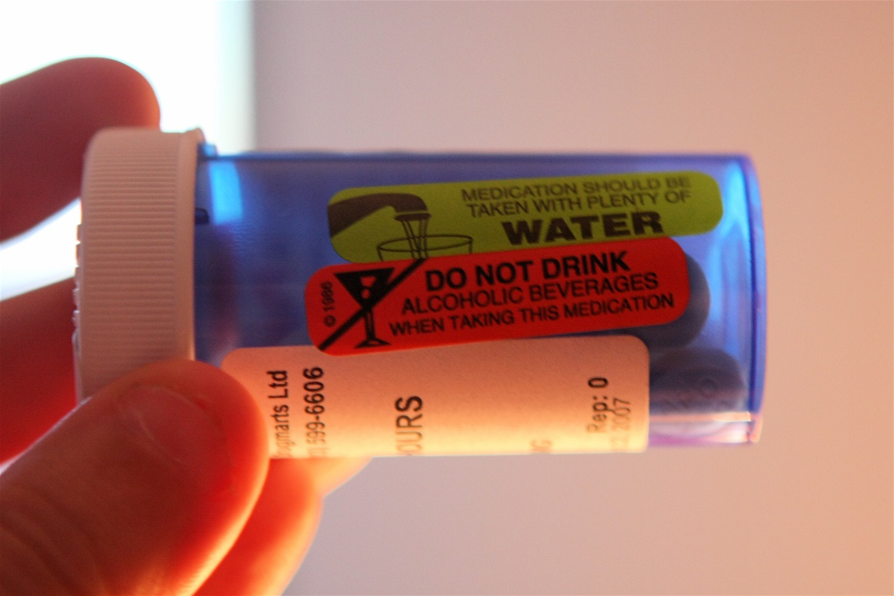
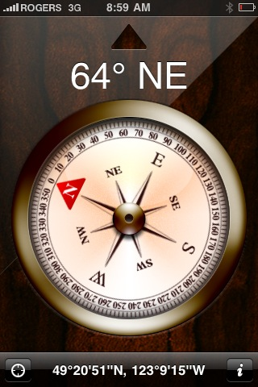

Last night I had the choice of staying up at my campsite, which was all set up, or staying in my nice air-conditioned apartment. Given how gross it was outside, I actually decided to stay here and get a good night's sleep. So this morning I had to wake up, do an hour long client call, and the head up to the lake and tear my campground down, which is thankfully all complete now.
So I'm back at home, and definitely looking forward to a semi-normal weekend around the house. The last few weekends ha...
So, I don't want to be known as a party pooper, but as I was sitting here in my bed, looking at live web cams of Vancouver's Celebration of Light, it suddenly occurred to me that shooting off fireworks into the sky when there's essentially a province wide fire ban on doesn't strike me as a particularly bright idea.
Sure, it brings people together. And I understand not only the amount of planning that goes into the event, but also how hard they would be to postpone or call off. But it seems stra...
With regards to my post from yesterday regarding c. diff. First, I want to thank my mom for the eighty or so phone calls and emails she's sent me regarding the subject since that blog entry went up: thanks for caring, mom. Don't worry, I'm ok.
Second, I've decided to change my diet in the short term to see if I can find a food trigger. Pretty much the only time I've felt normal again for a period of time was actually when I was in Cancun in March. For basically a whole week, my stomach problems ...
I gotta say, this week has been fairly insane in terms of heat. Given that I live inland now, it's been a few degrees warming than in Vancouver. The other day, while camping, the humidex hit 45C up at the lake, which is actually hotter than the hottest day I experienced back in Ottawa when I lived there (which was 43C). Let me tell you, it's hot.
I just tossed some burgers on the BBQ here. I briefly debated just tossing them on the ground, as I'm pretty sure they would have cooked just as well d...
Yes, that's all I've become. I wake up, I go outside, my plants get mad at me, and I spend the morning watering them and looking after them.
For those who are just joining the saga, I planted a few tomato plants on my patio at the end of May. I've watched them grow, seen them fall down a few times, nursed them back to health, and in return, I've been rewarded by the growth of a pile of little tiny tomatoes.
One of the challenges with growing fruits and vegetables on your patio is that it's real...

Almost two years ago, I was at work one day, banging on the keys and writing some code. Suddenly, I felt cold, and realized that my hands and my fingers were shaking. I tried to stay at work as long as I could, but after a while my hands were shaking so bad I could hardly function at my job, so I went home.
I curled into bed, and wrapped my duvet as tightly as it would go around myself. No matter how hard I tried, I just couldn't stop shivering. I ended up eventually falling asleep, and slept mo...
About a year ago, I was down in the United States attending WordCamp San Francisco. While there, my friend Jason lent me a little USB dongle that let me basically surf the web from anywhere. It was a CDMA device that basically piggybacked data onto the wireless towers such that you could use the internet wherever you could get cell access.
I was so impressed by it (remember, this was before the iPhone came to Canada) that I've been constantly on the lookout for something like that that I can als...
I briefly went into town this morning to water my plants, take a shower, and get a few groceries. I also managed to hook up with the guys and gals down at Hawk FM for a follow-up interview to the blogathon one I did on Friday.
Other than that, I spent most of today sitting shirtless on my picnic table, trying hard not to melt in today's heat. Thankfully I was in the shade most of the day, but man oh man, when that sun hit it sure was hot.
My sister, brother-in-law, niece and nephew came up for ...
Well, yesterday was an interesting day. It started at about 8am for me when I went up to the campground site to check in. As I pointed out, checking in was an hour long process, made longer by a few people who for some reason thought they were privileged campers. Unfortunately I was stuck in a wireless hole, so I wasn't able to take the call at 8am where I was supposed to be on the radio.
I'm going to be camping up there for three days, off and on, so I thought I'd write a few camping related en...
So, I'm sitting here camping, and trying to figure out just why it is that most cute girls ultimately end up dating complete Douche Bags. It's almost universal to be honest, and while there are exceptions to the rule obviously, it's something that I've never entirely understood.
A friend of mine actually just got into a new relationship, and I'm pretty sure the guy ranks a nine or a ten on the Douche Bag Scale. It's so obvious to me in fact that I really don't understand how she possibly can't s...
I'm up at Cultus Lake now, doing some weird cross between camping and working. I honestly wasn't too sure if I'd get 3G up here, and had planned to head back into town during the days. But given how I have four bars on my phone, and that 3G is working great, I might just work from up here.
To that end, I went back home a while ago and picked up my 15W solar panel and my 75Ah deep cycle battery. Right now my laptop appears to be drawing about 25W, which is fairly awesome considering I'm charging...
I went to bed last night at around 11pm, and slowly drifted off to sleep. For the most part, I had a decent sleep, and managed to get myself out of bed at around 7am. So I think I'm basically recovered from Blogathon at this point.
I was just up at Cultus lake sorting out my registration. There was a line up of cars about 20 deep waiting for the registration office to open, so it took me about an hour to get to the front. Of course, there were a few people who showed up and cut right to the fron...
Well, folks, Blogathon is over. Most of us left workspace sometime around 6:30am yesterday. I went with Rebecca and John back to their place, and we got there probably close to 7am or so. While everyone was totally fried, there was brief talk about watching a movie for a while to help the brain ramp back down to sleep mode. I laid down on the couch then, and woke up a few hours later to some of the sounds of downtown Vancouver.
At that point I adjusted some blankets, and fell asleep again, wakin...
Well, thus ends Blogathon 2009 - it was quite the adventure, one that I'm glad I was a part of again. The official Blogathon website shows approximately $40,000 raised for the various charities this weekend, which is totally awesome. Of that amount, approximately $1,250 was raised by the content on this blog, and by the people who supported my efforts and the BC Children's Hospital Foundation. So once again, you guys all have my sincerest thanks.
But while the donations and money are obviously a...
This is my second last entry, which means Blogathon is almost over. This was was definitely a lot harder for me than the one last year, mainly because I started the event already in a pretty exhausted state. But no matter - the end is near.
I'm sitting on the couch here at Workspace, watching the start of another sunrise. By the time this day is over for me, I will have seen two sunrises, a gorgeous sunset, and even a lightning storm. Not a bad day at the office if I do say so myself.
With every...
The following is a guest post by Tia Everitt from Chilliwack -- thanks for the contribution
Chilliwack.
It was the one place my husband and I swore up and down that we would NEVER, EVER live.
It was a place we raced through on the highway, en route to the Okanagan, or to get back to Vancouver. We plugged our noses as we gagged on the cloying, ever-present stench of cow manure. We snickered at the tacky billboards all the way in and out of the Fraser Valley. We made jokes about inbreeding. We c...
I actually remember last year about this time, when I hit the 40 mark. It's a good feeling, mainly because everyone can see the light at the end of the tunnel. But we still have a bit more time here, so I'll keep pumping out blog entries! Donations are still open, so if you're still up and feel like contributing to the BC Children's Hospital, then please do so -- your donation will be appreciated, and will go directly to helping out the children there.
There was a pretty wild sunset in Vancouver...
Tomorrow should be an interesting day. We're going to leave Workspace here sometime around 6am. With any luck, I'll be fast asleep sometime around 6:15am. Tomorrow there's a baby shower on the north shore that I'd really like to attend, so as of now I'm hoping to hit that. But in the odd event I feel like complete garbage tomorrow, I'll just head back home. But, assuming I feel ok, I'll be swinging by the North Shore for a while tomorrow.
I have a bit of work I need to do when I get home tomorro...
Well, assuming my fingers can press the right buttons at the appropriate times, this post will end up on sliding down the tubes sometime around midnight. It's dark outside now. The reason it's dark is because it's midnight, and the sun is on the other side of the planet.
Surprisingly, most people are still here from this morning. Everyone is obviously a bit tired, but most people are soldiering on. I'm hoping to go to a housewarming tomorrow for a while, which means I need to find a place to hol...
I gotta admit, my brain is oatmeal right about now. I know it's working because I can still type, but it's not being very cooperative. My typing has been reduced from my usual 100 word per minute down to about 15, and every sentence is ripe with spelling errors.
But no matter. The finish line is looming in the distance, and I've already (thanks to everyone here) reached the original goal of $1,000 I set before I started. So a big thanks is in order! I'm actually going on the radio Monday morning...
I thought I had a blog entry ready to go here, but apparently I didn't. We just listed to Mojave Band play a few songs down here at Workspace, and it was really awesome. Given that I only had five hours of sleep last night, I should feel way worse than I already do. But strangely enough, I feel not bad. I went down to the Lamplighter and picked up a few beers with Paul, so I've been casually sipping a few while staring out onto the water.
Anyways, I'm only $30 away from goal #2, so I'm hoping I ...
I'm sitting here listening to Dave O talk about Vancouver's "True North Media House" that will be forming for the Vancouver Olympics. To give you some context, Vancouver has demonstrated that it is at the forefront of social media. Many people here without true old-school media credentials have covered many events as members of the press. Rebecca has covered a lot of events simply as a representative of her website, Dave O has covered a few different Olympics, and I've covered a few music events...
Seems like the Blogathon gods are mad, and are punishing those people on Vancouver's north shore who weren't blogging today. From my vantage point, it's pretty gloomy over there. We've been watching lightening strikes for a while hit the mountains over there. While John Biehler thinks he's safe, I'm pretty sure he's in for a world of hurt over there, but we'll see.
My mom called a while ago and said that it was pretty stormy out in Chilliwack. Given that I didn't water my plants before I left, ...
This is one of my favourite shots. I took it down at the Celebration of Light two years ago. It was my first real time shooting fireworks with my camera. Unfortunately, I didn't have a tripod, so I basically experimented all night with settings that would allow me to handhold a fireworks shot. I ended up with a few keepers, but a lot of the ones I shot ended up being a bit blurry (which is why a tripod is usually preferable).
There are fireworks here in Vancouver tonight, but right now it's a b...
Mojave band is here doing a photo shoot right now. Once they're done they're going to be playing a few songs for us, which will totally be cool. Paul is actually a web designer too, and we almost had an opportunity to work with each other a few months ago. But we still hang out from time to time at coffee shops whenever I'm in town:
I'll take some photos during their set and post a few online. But I recently bought Mojave's new CD from iTunes, and it's a great listen, so make sure you pick it u...
It's slow, but the sun is slowly going down out here in Vancouver, which means we're not only past the half-way point, but it'll soon be dark. I imagine it'll be a lot harder to stay awake when it gets dark here, but who knows. Here's my current view in Vancouver:
I'm going to venture down to the Lamplighter in a bit and grab some beers. I probably won't crack any until the wee hours of the morning, mainly because my stomach feels like it's about to burst from all the food that's in it. But it ...
My camera is a digital SLR, and by default captures color instead of black and white images. That being said, once and a while I do take the odd photo that I think would work well as a black and white photograph.
I actually converted this photo into a black and white, but didn't really think that much of it. After uploading it to Flickr though, it became one of my most popular photos -- currently 43 people have indicated it's one of their favorites. Based on the response, I ended up printing ou...
Years ago I came across a poem called "Vancouver Lights" that I really enjoyed. Since I've down a few Vancouver centric posts, I thought I would also bit a few bits of Vancouver literature up as well. So without further ado, here is "Vancouver Lights" by Earle Bidney:
About me the night moonless wimples the mountains wraps ocean land air and mounting sucks at the stars The city throbbing below webs the sable peninsula The golden strands overleap the seajet by bridge and buoy vault the shears of...
While I was taking a quick break from blogging, Keira Mellis decided to help me out by writing an entry. So, this is a guest-entry by Keira. You can read more of Keira's writing over Keira-anne.com
Jordy and I have been at Workspace for several hours now, bringing candy and cheer to Duane and Rebecca as they blog for their respective charities. The space is quiet - almost too quiet - as everyone keeps their heads down, writing at frantic paces.
Despite being so focused, it's hard not to notice...
I took a quick 20 minute break from blogging, mainly to lay my head down on the couch here at Workspace at try to rest my brain. Compared to the noise levels nearly 12 hours ago, when Blogathon began, one might think that it's basically over here. People are still blogging away (so much so that when I closed my eyes briefly all I heard was the tappity-tap-tap of fingers scurrying across keyboards), but I think at this point most people are rather exhausted.
Most people probably think that writi...
I moved into a new apartment in January, and for the first time in ages, had a decent sized patio. Since my patio faces south (and subsequently, receives a lot of afternoon soon), I figured I would try growing a few different vegetables. When I started, I had just a few planters, and it looked something like this:
When things started sprouting, I got excited and decided to plant a few more things. Here's a shot a few weeks after I started:
I haven't taken any photos of it in a while, but here'...
I posted a photo of a cruise ship this morning surrounded by the mountains:
I was just reading the news though, and apparently that very same ship ended up killing a baby whale:
What appears to be a baby minke or fin whale has been impaled and killed on a cruise ship that docked in Vancouver Saturday morning.
The whale, about 20 metres long, was wrapped around the bow of the ship in full view of tourists at Canada Place.
A worker from the cruise ship, who didn’t want to be named, said he was...
We just had a pile of Dairy Queen here, which was awesome and much appreciated. So thanks Dairy Queen, for the food, and thanks Rebecca, for organizing it's delivery.
Things definitely seem a bit less active around here right now, probably because everyone's stomachs are all full of food now. I wouldn't be surprised though if people are losing a bit of stream -- we've all been at this nearly 8 hours already, and still have 16 hours to go. If my brain were a car engine right now, it would probabl...
I was one of the first people in Vancouver to experiment with HDR (high dynamic range) photography a few years ago. I definitely wasn't *the* first, because I actually got a bit of inspiration from a few other photographers in Vancouver who had been dabbling with HDR.
For yucks, I thought I would include the very first HDR shot I ever put together. It's a shot of Vancouver on a really storm day. I shot it from my balcony using a tripod, and merged three photos together using a tool on the Mac ca...
My friend Kelly sent me along this information, and I wanted to share it with everyone. Apparently Shaw Cable has been aggressively trying to hurt Novus in the Vancouver market. Here's some information from the 10buckstoo.com website:
Shaw has been offering residents in buildings wired for Novus wildly aggressive rates that it’s not offering anyone else. This appears to be an attempt to eliminate Novus, its only local cable TV competition, which is unethical and unfair.
One of these offers is ...
This entry represents post 18 out of a total of 49. So, I still have a fairly long ways to go. To be honest, I was pretty beat when I woke up, and feeling pretty worn out around 9:30am or so, but thankfully I seem to have gotten another wind. I've been consuming diet pop like it's going out of style, so that might have something to do with it. Or perhaps, it could be the big bottle of water I also started drinking in an effort to rehydrate myself. Whatever it is that's keeping me going, I sure h...
Without a doubt, one of my favorite events to shoot is a sunset. I used to live a stone's throw away from the Pacific Ocean, and walking down and watching the sun set was pretty much a weekly or a semi-weekly event during the summers. I know that many photographers think that sunset photos are a bit cliche, but I've never thought so. To me, watching the sun set highlights some of the real beauty of this world, and reminds me of all the great things that bring me joy in it.
So, here are a few of ...
I just wanted to personally thank everyone who has donated to my Blogathon campaign so far. I'll list the people who have indicated that they don't mind their name being given out. Right now, I'm sitting at about the $750 mark $1,000 mark, which is great considering I'm only about 1/3 of the way through the event. Here's a list of the current donators:
Tia & Richard Everitt
Darren and Nicole Johnston
Tom Storey
Raised on Indie
Cathy Webber
Jane Smith
Lorraine Toor
Kimberley Schellenberg
Jam...
A lot of my fellow bloggers around here have installed WordTwit today so that they can have their WordPress posts automatically show up on their Twitter feeds. While WordTwit doesn't officially support hashtags yet (those crazy things that look like #someword on Twitter), there's a quick little work around for events such as Blogathon.
First, navigate to the WordTwit administration panel. Typically you'll see something like this under general options:
The trick is to edit that text such that th...
A bunch of us are currently hanging out down in Gastown at a little place called Workspace. Because of how important Blogathon is and the amount of dedication involved by the participants, several organizations have offered to sponsor the event, namely in the area of food.
The first sponsor of today's event is Dairy Queen, and they'll be supplying all of us with burgers, fries, chicken strips, sundaes, blizzards, and onion rings. Back in high school, I had a bit of a crush on a girl who worked ...
I'm no old timer yet, but I'm definitely past the point where'd I'd consider myself a spring chicken. This year is really the first year where I've noticed any grey hairs, and is also the first year where I'm starting to recognize the odd pain. One in particular, a sharp pain in the heel on my left foot, tends to cause me some grief. Years ago I jumped off a big wall and landed pretty hard on my feet. I never got it looked at, but I'm fairly certain I cracked my heel bone, since I basically had ...
Another great city that I'm fortunate enough to spend a lot of time visiting is San Francisco, California. I was recently down there in June for a big WordPress conference, and will probably be down there again in a few months I imagine. Here's a shot I took of San Francisco about a year ago from just north of the Golden Gate Bridge.
I also just picked up a few diet cokes. Which means that today so far I've had three coffees, and one 500ml diet coke. Here's a shot of the current carnage:
...

When Apple introduced the iPhone 3GS, they added a new piece of hardware: a magnetometer. That little do-dad can pick up magnetic field lines, and basically act as a virtual compass.
While kind of a neat feature, I don't think it's very practical. I mean, pretty much every iPhone 3G user I know has the data plan, which basically means they can access Google Maps whenever they want. Yes, you can't get a real time indication of your direction using Google maps, but if you move around you can obvio...
A few months ago, another event occurred that was intended to help raise money for the BC Children's Hospital Foundation. That event was the Chip's Not Dead Yet memorial mile. Here's a little quote from the BC Children's Hospital Foundation as shown on the Chip's Not Dead Yet site:
The Chip’s Not Dead Yet Memorial Mile supports BC Children’s Hospital and the uphill battles faced by children who are trying to get well, and the medical staff who are trying to make miracles happen.
Children ar...
A bunch of us are currently down at Workspace in Vancouver, which is a shared office space situated right on the water in Gastown. I have a rather great view of the North Shore mountains along with the cruise ship terminal at Canada Place.
One of my favorite photos is this next one from Gastown I took last year from the lookout at Harbour Center:
I actually shot the photograph through a window, so it's surprising that you can't see any glass. But I've always liked all the angled lines in the ph...
As we all know, the flux capacitor is what makes time travel possible. Blogathon, on the other hand, is made possibly by everyone's favorite stimulant, caffeine. And so this post is dedicated to caffeine in various forms.
I'm currently on my third coffee. I woke up and had a 7-11 coffee (because that's all I could find at 5:30am), then pounded back some coffee here at Workspace, and just picked up a new coffee from a little Gastown coffee shop called Lunas. I imagine I'll probably average a coff...
While I don't have any kids of my own, what I do have are a really great niece and nephew that I love very much:
Despite not really spending much time with them over the last ten years (mostly because I lived in a different city), I'm actually fairly close to both of them, and have really been enjoying my time with them since moving back to Chilliwack. Last night my niece gave me a phone call and told me about all of the boy crushes she had while at summer camp (count 'em people, 11 boy crushes...
One of the hobbies I have that brings me a lot of enjoyment is photography. It's something I've slowly honed and improved over the years to the point where I'm fairly comfortable with my camera, and with taking photos in most situations. Given how much enjoyment it's been to me, I thought I would periodically do the odd photo-entry for blogathon and talk a bit about the photos I share.
This shot of Kitsilano beach is one of the shots I'm most known for. It's currently used on the Kitsilano.ca w...
Since I wrote in detail about Vancouver in my last post, it's only fitting that I talk a little bit about my current place of residence, Chilliwack. Chilliwack is a little farming community nestled between a mountain range, approximately 100 kms east of Vancouver. My apartment is probably only about 5 minutes from one of the nicest provincial parks in the province, complete with it's own picturesque lake:
I currently rent a 1200 square foot apartment for about $100 less a month than I was payin...
Vancouver is without a doubt one of the prettiest cities in the world, something that I appreciate more and more every time I go on a trip. In fact, I was just mentioning to a friend yesterday just how clean and inviting Vancouver is compared to most cities, specifically San Francisco and Los Angeles (both of which seem grubby and dirty by comparison, even though I happen to like aspects of both).
And while Vancouver is a pretty city, it is not without its problems. In fact, Vancouver's lower-e...
The BC Children's Hospital Foundation is an organization that works to improve the lives of every child who enters and leaves the BC Children's Hospital in Vancouver. For many families, the BC Children's Hospital becomes a second home for a period time, often while they are helping a child of theirs get back to help:
BC Children’s Hospital Foundation (BCCHF) supports the people, places and things required to ensure BC’s kids have access to outstanding pediatric care. Since 1982, BC Children...
Welcome everyone the Blogathon 2009! Over the next 24 hours, I will be consuming insane amounts of caffeine while writing blog entries in an effort to generate some exposure and hopefully a bit of financial support for the charity of my choosing, the BC Children's Hospital Foundation.
I can't imagine many things worse in this world then being a parent and watching your child get sick. The BC Children's Hospital is known Canada wide for the work they do with children, which is why I've chosen it ...
In less than 8 hours, Blogathon 2009 will begin. I'm currently hanging out at Rebecca's house, watching Stand By Me and eating popcorn. I started working on a little spreadsheet of blog entries for tomorrow, but only filled in about 15 spots or so, which means the other 34 will have to be decided sometime tomorrow.
To be honest, I'm fairly beat. I don't even recall last year's Blogathon at this point, although I do remember hanging out at my place with Rebecca, John and Raul, sometime around mid...
In less than 24 hours, Blogathon kicks off in Vancouver. I forced myself to go to bed around 11pm last night such that I would have a pretty decent sleep. I tried to get up at around 7am, but my body wasn't too happy about it, so instead I slept in until around 8:30am, and now I feel pretty decent.
In theory I should go easy on coffee today such that tonight I can have yet another decent sleep, so that's probably what I'll do. Tomorrow however I'll be pushing my little donkey cart down caffeine ...
British Columbia just announced that they are going to be switching to a harmonized sales tax model in July of next year. Basically, instead of having a provincial sales tax (PST) of 7%, and a goods and services tax (GST) of 5%, they are going to have one combined tax, a harmonized sales tax (HST) of 12%.
I'm no economist, but that seems like a pretty bad idea. Here's a quote from the official release:
This is the single biggest thing we can do to improve B.C.’s economy,” said Premier Gordo...
This morning I was thinking about Blogathon while hopping in the shower, and I had that image in my head of the joker from The Dark Knight saying "And Here.... We... Go... "
In less than 48 hours Blogathon 2009 will officially kick off. Some people will be down at WorkSpace in Vancouver hanging out, and others will be congregating in the Valley somewhere. I still haven't decided where I'll end up, although I'm leaning towards the WorkSpace route, as it would be nice to hang out with some friends...
I spent the last five years pretty much exclusively coding in C++. Strangely enough, I haven't really touched a C++ compiler since leaving Vancouver, and instead have been pretty much coding non-stop in PHP.
Obviously C++ is a compiled language, and PHP is an interpreted one. In terms of enjoyment, I think I like the challenge of coming up with cool C++ code, but without a doubt, PHP is far more enjoyable overall. The main reason, at least for me, is because I can write some code and instantly s...
One of the things I've noticed lately is that I'm spending way more time on Twitter than I'd like. Truthfully, it's fairly addictive, and I really don't know why. This afternoon I noticed I noticed myself sitting on the updates page, refreshing occasionally, waiting for a few replies to some messages I had sent out. While doing that, I had the sudden idea that Twitter (at least for me) would be a bit more useful if it were a push system instead of a polling system. That way at least, I wouldn't ...
I just got off the air with The Hawk, Chilliwack's Rock station, located at 98.5 on your Chilliwack/Abbotsford dials. Rebecca Bollwitt is currently putting a recording of the broadcast on her Viddler account, at which point I'll put it up here for everyone to listen to recorded the interview, and has provided it for everyone's listening pleasure -- thanks Rebecca!
I hadn't really thought about a goal for fundraising, so I said I was going to attempt to raise $2,000. The good news is that I think...
This is it folks, summer. Like most summers, I do my best to relax a bit and venture into the outdoors as much as I can. Most summers I'm not entirely successful, but last year I actually managed to go camping three or four times, which was enough to satisfy my cravings for the season.
Camping is actually one of the few things I really enjoy in life: just tossing my tent into the back of my car and driving off into the distance. Maybe it's that feeling I get when I'm half-cut and I stare up at t...
I doubt that this year I'll be able to watch any of the fireworks, but in previous years I've tried to catch at least one fireworks display. Strangely enough, you'd think I would have seen them all, given how I lived right on the corner of Beach and Howe in Vancouver for three years.
I have lots of memories of the fireworks, but my favourite memory, and a story I tell often, involves some heartache and a beer. I had just broken up with my ex-girlfriend, and was feeling a bit blue. So my friend ...
Whenever you travel somewhere new, there are invariably a bunch of local customs or behaviors that you encounter that are completely opposite to those back home. I try to keep a mental list in my head such that I can try to seem less out of place when I return to a location a second time. Here's a partial list of things that I've encountered on my travels that are different in various locations:
In the United States, soft drinks are called "Soda", not "Pop". Most people will either giggle when ...
I woke up yesterday in Cascade Locks, Oregon and decided to hit the coast for a few hours. I bounced through Portland, grabbed a coffee and some breakfast, and had a really great, leisurely drive along a forested road towards Cannon Beach. I pulled in right around lunch time, and hunted around for a good place to grab some food. Thankfully I found a neat little brew pub, just a block from the water.
I tasted a few of their beers, and also a nice plate of Halibut and Chips. Afterwards, I grabbed...
Last week I had the chance to talk to Paul Henderson of the Chilliwack Times regarding Blogathon. We ended up talking about various other items, including Facebook and Twitter, and some of my thoughts about the stuff I was doing over at InTheWack.com (which I need to update a bit more frequently).
Today the Chilliwack Times ran a story in the local paper, and it appears the online version is available here.
Just a couple of clarification points:
Last year Rebecca and I supported the Union Gospe...
I'm current hanging out at the KOA in Cascade Locks, Oregon. It's fairly dead here tonight, mainly because most people left today to go back to their 9-5 routines. Thankfully the wireless works a lot better now that not everyone is using it.
My friend Sean swung by tonight, so we had a few beers around the picnic table. It was good to catch up. Last time I saw him was probably about six or seven months ago down in Portland when I had a job interview.
I briefly went into Portland this afternoon t...
This morning I woke up and decided to make some plans. Strangely enough, that line from Shawshank Redemption kept going through my head -- "get busy living, or get busy dying. You god damn right."
Anyways, it also didn't help matters that Dave and Lauren took off the other day, as well as Tanya and Gus. Even Dale left yesterday to go do some relaxing at a cottage. So Instead of just heading south without a plan (something I've done many times before and been burned for), I decided to call a few ...
I did a photoshoot the other day for a few friends of mine. The shoot was in a big field, at around 4pm in the afternoon. There was lots of light obviously, since it was a sunny day, but the sun was high in the sky and the shadows were pretty harsh.
For the most part, I always take a flash outdoors with me now. A long time ago using a flash outside would have seemed silly, but I've photographed a few weddings now, and understand that fill flash is required in many outdoor situations to help bala...
Well, today was a bit of a disappointment. I was hoping to be camping right about now, but apparently it's next to impossible to get a campsite nowadays. Strangely enough, getting a campsite when I was in high school was trivial -- you'd simply go up to the lake whenever you wanted a spot, and you'd probably get one. Worse case you'd head down to Chilliwack Lake (40kms), and find a nice spot there for even less money.
Things started to change years ago when Discover Camping (the web service behi...
I'm pretty close to wrapping up a few projects here, so much so that I'm half packed already for my upcoming road trip. Until this afternoon, I hadn't really decided what I was going to do for a little break, but after talking to a few people, decided to hit the open road and see where it takes me. It's more of a working vacation to be honest, as I still have a few client projects to do, but I plan to do them from beside the pool at a KOA, or little coffee shops near the ocean somewhere. I've be...
I've been playing guitar since I was about 18 years old. My first guitar was actually (believe it or not) a Fender Stratocaster electric guitar. It was basically my high school present from my mom in exchange for graduating and getting myself to UBC. Unfortunately, I really couldn't afford an amplifier at the time, so I basically just practiced on it ampless for the first few years. Eventually I managed to save some cash and bought a Fender Princeton 112 amplifier, which I still have (although i...
It's been about three days since I launched the new site, and I've had some great feedback regarding it (thanks everyone). I've made a few small tweaks based on some comments, so hopefully it's a bit better.
I've been watching my traffic, and so far I've consistently about double the traffic (actually, a tad bit more) since launching. I'm sure part of that is a transient contribution from launching a new site and Twittering about it, but I'm fairly certain the traffic will definitely go up, sinc...
All my stitches are out. This is day five after surgery now. All the areas are a bit red, but they're healing. Was nice to take a real shower today and also shave.
It generally takes about 6 months for surgery sites to finish healing, so I still have lots of healing to do. A little bit of trivia - after 7 days, surgery sites only have about 7% of the tensile strength of normal skin. So still have to be careful for a while....
I was talking to a few people on the weekend about this current iteration for my theme, and it seems there's enough interest that I might eventually set this up as a download, or add it to the WordPress theme repository. But, I'd like a bit more input from some photographers about features I can potentially add.
One thing I was thinking of incorporating was a stand-alone microstock service. For example, beside each photo there would be a "Buy" button that would take you to PayPal. Once you paid ...
Tonight some of my old friends came for a visit, and we went down to the little park near where we grew up to take a few family photos. Unfortunately the weather wasn't really cooperating, and we got rained on a little bit.
One of the biggest challenges for taking family photos is working with children. Children are obviously full of energy, and taking photos isn't always something they like to do, especially when there are swing sets and ducks waddling around. Thankfully Kaede was happy to acc...
So yesterday I was sitting on my patio trying to figure out when to take a vacation. I still have a few small client-related items to finish off, so I've been waiting around for that. While going over everything in my head though I remembered that because I work from a laptop, there's really no reason why I can't work remotely. All I need is an internet connection once and a while to check email, and I'm basically golden.
With that in mind, I'm thinking about testing my Nexus pass out in the ne...
Well, yesterday was a pretty warm day here in Chilliwack. I think it officially got up to 31 degrees Celsius. My little weather widget says it might rain a bit today, but here's hoping it's wrong. I'm hopefully going to go up to the lake for a few hours with some friends. Other than these last few days, this seems to be a pretty poor summer so far in terms of weather. What does everyone else think?
I've also emailed the TweetMe guys about my widget on the right - for some reason it doesn't work ...
While in Cancun back in March, Dale and I had a pretty drunken discussion on our hotel patio, not really about anything, but at the same time, a conversation about everything. We talked a bit about politics, a bit about spirituality, about the past, and about the future. Jump ahead three months, and here I am, on my own patio, drinking a rum and diet coke, surrounded by green tomatoes, looking up at the stars that were absent from my life for the last five years, thinking back on my first five m...
As you can see, things have changed around here a bit. I actually still have quite a bit left to do on this theme, but it's functional enough that I put it live. I'm going to do a custom template for the upcoming Blogathon event, and also flesh out the content in a few more areas. But it's definitely getting close. Thanks to Dale for his help with this too....
In a perfect world, I'd already be on vacation. But since we have a few client commitments that have taken a bit longer than expected, I'm still working away. My original plan was to maybe go camping for a few days this upcoming week, but that doesn't seem likely right now. But hopefully by mid week I'll be in vacation mode, and will be taking a few weeks of downtime (I'll still be doing a few client related projects during this time period, but those don't encompass more than a few days a week)...
I've been approved on the official Blogathon website, which means people can actually start pledging for me now. Strangely enough, I've already received about $80 in pledges, several of which came in before I was approved on the website. They appear to be legit, but I can't for the life of me figure out where they came from.
But anyways, as I've pointed out in previous postings, I'll be supporting the BC Children's Hospital on July 25th. So if you'd like to support my efforts and the children at...
A few weeks ago I blogged about an upcoming appointment to have a few moles removed from my face (the main reason being that I keep cutting them while shaving). Well, today was the day, and they're officially gone.
Strangely enough, I've developed a bit of a fainting reaction over the years to needles. That's weird because needles don't scare me in the least, and for the most part, I have a pretty high pain tolerance. But there's something about a needle being stuck in me that elicits some kind ...
Years ago I was in the lab at UBC when I got a call telling me that my sister was in labour. A few hours later I was back in Chilliwack, and Jessica, my niece, was welcomed into this world. Over the course of her life, I unfortunately haven't been around as much as I would have liked. But thankfully now I'm in Chilliwack and I can spend more time with her.
One time I was back in Chilliwack visiting and decided I wanted to get a Whopper from Burger King. Jessica asked if she could come with me, s...
This year's Blogathon takes place on July 25th, starting at 6am PDT. As most people know, last year I teamed up with Rebecca Bollwitt to help support the Union Gospel Mission in Vancouver. With some help from Matthew Good, the three of us raised around $8,000 I believe for Vancouver's homeless.
Without a doubt, Blogathon is an event that I wanted to be a part of this year. I briefly debated supporting a local Chilliwack charity, but given that I really don't know of many here, I decided not to g...
I had a bit of time yesterday (really, I didn't, but the creative juices were flowing and I wanted to start dabbling), so I started tinkering with some ideas for a new theme for this site. While I routinely update the theme on this site (I average about every four months or so), I really want the next one to be up here for quite some time, so I'm not going to rush development on it.
I have a few basic goals for the new theme:
The theme should put more focus on aspects of my life such as photogr...
I've slowly been chipping away at my loans these last few years, hoping for that day to come when I'll be debt free. My net worth is positive, thanks to some RRSPs and the down payment I put into my car, but having debt hanging over your head obviously kind of sucks. I have a little spreadsheet that sort of tracks where I'm at. In April of 2008 I owed around $25,500 in both student loans and car loans. At my peak, I had around $40,000 worth of student loans, a fairly hefty debt load by anyone's ...
I wrote an article last year about a girl named Megan who committed suicide after a boy named Josh on MySpace told her that the world would be better off without her. The tragic element of that tale is that there was never a boy named Josh - it was always a fake person, invented by a friend of Megan's and Lori Drew, that girl's mother.
The two of them together gained Megan's confidence on MySpace, and then proceeded to toss insults at her, eventually leading directly to Megan wrapping some rope ...
I have an appointment on Wednesday to get a few moles removed from my face. I've had them most of my life, and for the most part they haven't really bothered me. That being said, this last year I've found myself cutting two of them while shaving from time to time, which usually results in them bleeding for hours at a time (real attractive, I know).
You can see two of them in this photo. The first is the one on my right cheek, and the second is the one on my left upper-lip. The third one is real...
Turns out that my friend Lynn down in Seattle has had a blog for years and years, but for some reason I never knew about it until recently. It's actually a really good read, with quite a few personal entries as well. So if you're looking for some new reading material, definitely head on over and check it out. She'll probably kill me for posting this, but I like living dangerously, so.
Lynn was nice enough to send me some fruit flowers for my birthday years ago, and even though I'm not in Seattle...
I put together a Facebook photography page a while ago. If you use Facebook, and like some of the photos I've taken, then please become a fan of this page. I'm going to be redoing my personal website shortly to be more photo centric and mostly reflect my online photography as opposed to some of my writings....
About 18 months ago a few people encouraged me to put some of my photos online for sale. Given that my Vancouver scenery ones are the most popular photos in my portfolio, I've pretty much only focused on that. I've actually made a decent amount by selling them, probably enough to be able to afford a cheap lens, which is pretty cool.
The next item on my wish list is the Canon EOS 5D Mark II camera, which is one of the most affordable full frame cameras on the market. Unfortunately, the list price...
Today is also my step-sister Alison's birthday. Strangely enough, I went through my Flickr photos and I don't really have any good shots of her, so I had to grab one from her Facebook profile instead. Tonight we're having a little BBQ over at my dad's house for her, which should be fun (although I probably won't be staying too long, as I'm pretty swamped with work).
Happy Birthday Alison!...
 About a year ago, I was down in the United States attending WordCamp San Francisco. While there, my friend Jason lent me a little USB dongle that let me basically surf the web from anywhere. It was a CDMA device that basically piggybacked data onto the wireless towers such that you could use the internet wherever you could get cell access.
I was so impressed by it (remember, this was before the iPhone came to Canada) that I've been constantly on the lookout for something like that that I can als...
About a year ago, I was down in the United States attending WordCamp San Francisco. While there, my friend Jason lent me a little USB dongle that let me basically surf the web from anywhere. It was a CDMA device that basically piggybacked data onto the wireless towers such that you could use the internet wherever you could get cell access.
I was so impressed by it (remember, this was before the iPhone came to Canada) that I've been constantly on the lookout for something like that that I can als...
 A lot of my fellow bloggers around here have installed WordTwit today so that they can have their WordPress posts automatically show up on their Twitter feeds. While WordTwit doesn't officially support hashtags yet (those crazy things that look like #someword on Twitter), there's a quick little work around for events such as Blogathon.
First, navigate to the WordTwit administration panel. Typically you'll see something like this under general options:
The trick is to edit that text such that th...
A lot of my fellow bloggers around here have installed WordTwit today so that they can have their WordPress posts automatically show up on their Twitter feeds. While WordTwit doesn't officially support hashtags yet (those crazy things that look like #someword on Twitter), there's a quick little work around for events such as Blogathon.
First, navigate to the WordTwit administration panel. Typically you'll see something like this under general options:
The trick is to edit that text such that th...